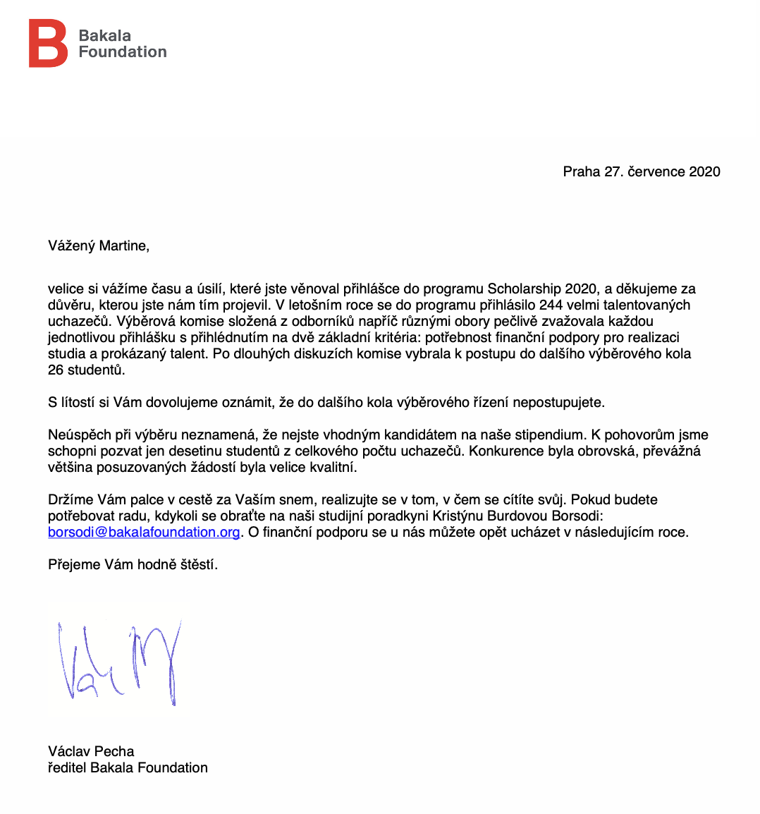
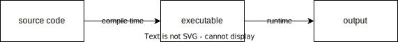
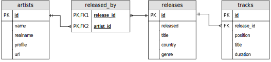

Od předmětu BI-OOP k type-safe SQL queries ve Scale
11. 12. 2023
slidy: bit.ly/fit-tyqu
FIT anketa funguje
Zkus to, i když si nevěříš



Neboj se zeptat

Type safety
def add_numbers(a, b):
return a + bresult = add_numbers(5, "10")
print(result)Traceback (most recent call last):
File "/Users/martin/Documents/FIT prednaska/test.py", line 4, in <module>
result = add_numbers(5, "10")
^^^^^^^^^^^^^^^^^^^^
File "/Users/martin/Documents/FIT prednaska/test.py", line 2, in add_numbers
return a + b
~~^~~
TypeError: unsupported operand type(s) for +: 'int' and 'str'public class Calculator {
public static int addNumbers(int a, int b) {
return a + b;
}
}Calculator.addNumbers(5, "10");Main.java:11: error: incompatible types: String cannot be converted to int
Calculator.addNumbers(5, "10");Compile time vs. runtime

case class Account(id: String, currency: Currency)
case class Agent(id: String, active: Boolean)
class OrderService:
def placeOrder(accountId: String, agentId: String, ...): UnitorderService.placeOrder(agent.id, account.id, ...)case class AccountId(value: String)
case class AgentId(value: String)
case class Account(id: AccountId, currency: Currency)
case class Agent(id: AgentId, active: Boolean)
class OrderService:
def placeOrder(accountId: AccountId, agentId: AgentId, ...): UnitorderService.placeOrder(agent.id, account.id, ...)-- [E007] Type Mismatch Error: -------------------------------------------------
1 |orderService.placeOrder(agent.id, account.id)
| ^^^^^^^^
| Found: (agent.id : AgentId)
| Required: AccountId
|
| longer explanation available when compiling with `-explain`
-- [E007] Type Mismatch Error: -------------------------------------------------
1 |orderService.placeOrder(agent.id, account.id)
| ^^^^^^^^^^
| Found: (account.id : AccountId)
| Required: AgentId
|
| longer explanation available when compiling with `-explain`
2 errors foundScala crash course
… like Java but better!
Type inference
def addNumbers(a: Int, b: Int): Int = a + b
val result: Int = addNumbers(5, 10)
println(result)Type inference
def addNumbers(a: Int, b: Int): Int = a + b
val result = addNumbers(5, 10)
println(result)Všechno je expression
val greeting =
val hour = java.time.LocalTime.now().getHour
if hour < 12 then
"Good morning!"
else
"Good afternoon!"Typová hierarchie

Všechno je expression
val s: String = readInput()
val i: Int =
if s.forall(_.isDigit) then
s.toInt
else
throw new Exception(s"$s is not an integer")Všechno je objekt
val number = -10
println(number.sign) // -11 + 2 == 1.+(2)Funkce je taky objekt
val f: Function2[Int, Int, Int] =
(x: Int, y: Int) => x + y
f(1, 2) == f.apply(1, 2)Všechno je funkce
val digitToText = Map(
0 -> "zero",
1 -> "one",
2 -> "two",
3 -> "three",
)
digitToText(1) // "one"
val number = 123
val str =
number // 123
.toString // "123"
.map(_.asDigit) // ArraySeq(1, 2, 3)
.map(digitToText) // ArraySeq("one", "two", "three")
.mkString(" ") // "one two three"Singleton objekty
object Logger:
def log(msg: String): Unit =
println(msg)
Logger.log("Hello, world!")Discogs databáze

Type safety a databáze
import java.sql.*
val connection = DriverManager.getConnection("jdbc:postgresql://...")
val st = connection.createStatement()
val rs = st.executeQuery("SELECT 'Hello, world!'")Problém na straně DB
st.executeQuery("SELECT * FROM artists WHERE name >= 7")org.postgresql.util.PSQLException: ERROR: operator does not exist: character varying >= integer
Hint: No operator matches the given name and argument types. You might need to add explicit type casts.
Position: 34
at org.postgresql.core.v3.QueryExecutorImpl.receiveErrorResponse(QueryExecutorImpl.java:2676)
at org.postgresql.core.v3.QueryExecutorImpl.processResults(QueryExecutorImpl.java:2366)
at org.postgresql.core.v3.QueryExecutorImpl.execute(QueryExecutorImpl.java:356)
at org.postgresql.jdbc.PgStatement.executeInternal(PgStatement.java:496)
at org.postgresql.jdbc.PgStatement.execute(PgStatement.java:413)
at org.postgresql.jdbc.PgStatement.executeWithFlags(PgStatement.java:333)
at org.postgresql.jdbc.PgStatement.executeCachedSql(PgStatement.java:319)
at org.postgresql.jdbc.PgStatement.executeWithFlags(PgStatement.java:295)
at org.postgresql.jdbc.PgStatement.executeQuery(PgStatement.java:244)
... 32 elidedProblém na straně klienta #1
val rs = st.executeQuery("SELECT title, position FROM tracks");
while rs.next() do
val title = rs.getString("title")
val pos = rs.getInt("position")
println(s"$pos. $title")org.postgresql.util.PSQLException: Bad value for type int : A
at org.postgresql.jdbc.PgResultSet.toInt(PgResultSet.java:3205)
at org.postgresql.jdbc.PgResultSet.getInt(PgResultSet.java:2422)
at org.postgresql.jdbc.PgResultSet.getInt(PgResultSet.java:2817)
... 32 elidedProblém na straně klienta #2
val rs = st.executeQuery("SELECT title, position FROM tracks");
while rs.next() do
val title = rs.getString("title")
val pos = rs.getString("position")
val duration = rs.getString("duration")
println(s"$pos. $title ($duration)")org.postgresql.util.PSQLException: The column name duration was not found in this ResultSet.
at org.postgresql.jdbc.PgResultSet.findColumn(PgResultSet.java:3033)
at org.postgresql.jdbc.PgResultSet.getString(PgResultSet.java:2888)
... 32 elidedCo bychom chtěli
val res = findAllTracks()
.filter: track =>
track.release.id == 10 || track.release.id == 12
.filter(_.title.startsWith("Hello"))
.sortBy(_.title)
for track <- res do
println(s"${track.title} ${track.release.title}")Tyqu
object Releases extends Table:
val id = Column[Int](primary = true)
val title = Column[String]()
val genre = Column[String]()
...
lazy val tracks = OneToMany(Tracks, Tracks.release)
object Tracks extends Table:
val id = Column[Int](primary = true)
val releaseId = Column[Int]()
val title = Column[String]()
val duration = Column[Int]()
...
lazy val release = ManyToOne(Releases, releaseId)Tyqu
val res = from(Tracks)
.filter: track =>
track.release.id == 10 || track.release.id == 12
.filter(_.title.startsWith("Hello"))
.sortBy(_.title)
.map: track =>
(
track.title.as("track"),
track.release.title.as("release"),
)
.execute()
for row <- res do:
println(s"${row.track} ${row.release}")Tyqu: Demo
Tyqu: internals
class QueryBuilder[S <: Scope](
scope: S,
from: FromRelation[?] | SubqueryRelation,
where: Expression[Boolean] = NoFilterExpression,
orderBy: List[OrderBy] = List.empty,
...
):
def map[S2 <: Scope](fn: S => S2): QueryBuilder[S2]
def filter(predicate: S => Expression[Boolean]): QueryBuilder[S]
def sortBy(fn: S => OrderBy): QueryBuilder[S]
def execute(): Iterator[Result[S]]
...Scala deep dive
Structural types
class Record(fields: Map[String, Any]) extends Selectable:
def selectDynamic(name: String): Any = fields(name)
Structural types
class Record(fields: Map[String, Any]) extends Selectable:
def selectDynamic(name: String): Any = fields(name)
val person = Record(Map(
"name" -> "Emma",
"age" -> 42,
))
println(person.name)Structural types
class Record(fields: Map[String, Any]) extends Selectable:
def selectDynamic(name: String): Any = fields(name)
val person = Record(Map(
"name" -> "Emma",
"age" -> 42,
)).asInstanceOf[Record & { val name: String; val age: Int }]
println(person.name)Tyqu: internals
val q = from(Releases) // QueryBuilder[TableScope[Releases.type]]val q2 = from(Releases).map: release =>
(
release.id,
release.title,
) // QueryBuilder[TupleScope{val title: NamedExpression[String, "title"]; val id: NamedExpression[Int, "id"]}]val res = q2.execute() // Iterator[Result{val id: Int; val title: String}]AST
1 + 2 * 3plus(1, multiply(2, 3))
Inline funkce
inline def perimeter(radius: Double): Double =
2 * 3.14 * radiusval p = perimeter(5.0)val p = 2 * 3.14 * radiusMakra
import scala.quoted.*
object Macro:
inline transparent def show(inline v: Any): Any =
${ showImpl('v) }
private def showImpl(v: Expr[Any])(using Quotes): Expr[Any] =
import quotes.reflect.*
println(v.asTerm)
vMacro.show(5.0)Literal(Constant(5.0))val x = 1
Macro.show(x + 2)Apply(Select(Ident(x),+),List(Literal(Constant(2))))Macro.show(Map(
"name" -> "Emma",
"age" -> 42,
))Apply(TypeApply(Select(Ident(Map),apply),List(TypeTree[TypeRef(ThisType(TypeRef(NoPrefix,module class lang)),class String)], TypeTree[OrType(TypeRef(ThisType(TypeRef(NoPrefix,module class lang)),class String),TypeRef(ThisType(TypeRef(NoPrefix,module class scala)),class Int))])),List(Typed(SeqLiteral(List(Apply(TypeApply(Select(Apply(TypeApply(Ident(ArrowAssoc),List(TypeTree[TypeRef(ThisType(TypeRef(NoPrefix,module class lang)),class String)])),List(Literal(Constant(name)))),->),List(TypeTree[TypeRef(ThisType(TypeRef(NoPrefix,module class lang)),class String)])),List(Literal(Constant(Emma)))), Apply(TypeApply(Select(Apply(TypeApply(Ident(ArrowAssoc),List(TypeTree[TypeRef(ThisType(TypeRef(NoPrefix,module class lang)),class String)])),List(Literal(Constant(age)))),->),List(TypeTree[TypeRef(ThisType(TypeRef(NoPrefix,module class scala)),class Int)])),List(Literal(Constant(42))))),TypeTree[AppliedType(TypeRef(ThisType(TypeRef(NoPrefix,module class scala)),class Tuple2),List(TypeRef(ThisType(TypeRef(NoPrefix,module class lang)),class String), OrType(TypeRef(ThisType(TypeRef(NoPrefix,module class lang)),class String),TypeRef(ThisType(TypeRef(NoPrefix,module class scala)),class Int))))]),TypeTree[AppliedType(TypeRef(ThisType(TypeRef(NoPrefix,module class scala)),class <repeated>),List(AppliedType(TypeRef(ThisType(TypeRef(NoPrefix,module class scala)),class Tuple2),List(TypeRef(ThisType(TypeRef(NoPrefix,module class lang)),class String), OrType(TypeRef(ThisType(TypeRef(NoPrefix,module class lang)),class String),TypeRef(ThisType(TypeRef(NoPrefix,module class scala)),class Int))))))])))transparent inline def map[T <: Tuple](fn: S => T): QueryBuilder[?] =
val selection = fn(scope)
this
.copy(scope = TupleScope(selection))
.asInstanceOf[QueryBuilder[TupleScope & { /* generated by macro */}]]Todo
- prepared queries
- explicit joins
- DML (insert, update, delete)
- single-row queries
- async
- make ready for customizations
- transactions
- generating: DDL from schema, schema from DDL
- migrations
Reklama
#lang-talk meetups
Milý Ježíšku
Shrnutí
slidy: bit.ly/fit-tyqu
- Neboj se zeptat
- Scala je cool
- Tyqu je cool
Backup
Tyqu: Expression
abstract class Expression[T]
abstract class NamedExpression[T, Name <: String & Singleton] extends Expression[T]
case class LiteralValue[T](value: T) extends Expression[T]
case class ColumnValue[T, Name <: String & Singleton] extends NamedExpression[T, Name]
case class IsNull(e: Expression[?]) extends Expression[Boolean]
case class And(lhs: Expression[Boolean], rhs: Expression[Boolean]) extends Expression[Boolean]
case class Plus[T1 <: Numeric, T2 <: Numeric](lhs: Expression[T1], rhs: Expression[T2]) extends Expression[T1 | T2]